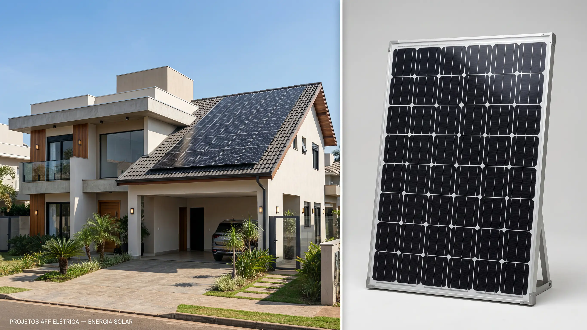
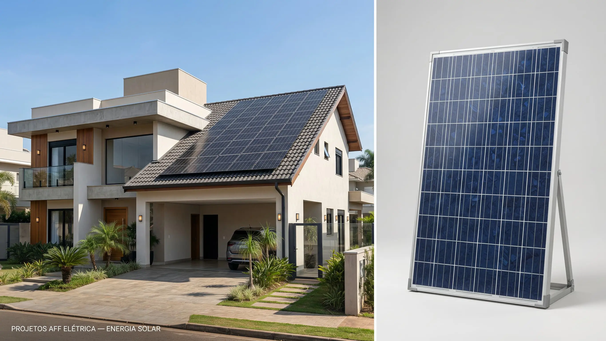
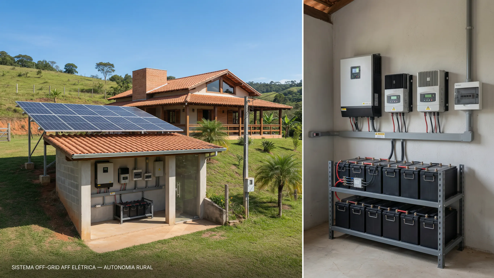
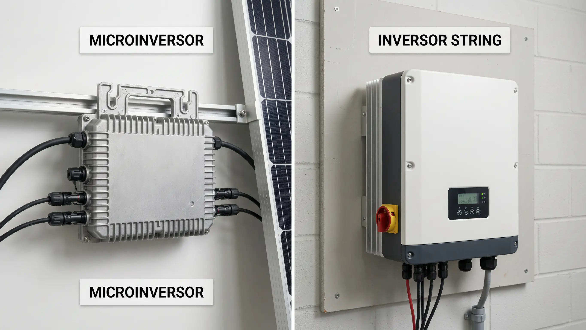

Painéis Fotovoltaicos Monocristalinos

Os módulos monocristalinos possuem células escuras de silício puro e oferecem maior eficiência energética por metro quadrado, sendo ideais para telhados com espaço reduzido.
Atualizado em .
Soluções completas em instalação de energia solar e placas solares fotovoltaicas em Uberaba-MG.

Os módulos monocristalinos possuem células escuras de silício puro e oferecem maior eficiência energética por metro quadrado, sendo ideais para telhados com espaço reduzido.
Atualizado em .

Reconhecidos pela coloração azulada, os módulos policristalinos entregam excelente custo-benefício e são uma opção confiável para telhados amplos com boa incidência solar.
Atualizado em .

Indicados para propriedades rurais e locais isolados, garantem energia elétrica contínua 24 horas por dia por meio de baterias estacionárias.
Atualizado em .

Enquanto o inversor string centraliza a conversão de várias placas em série, o microinversor atua de forma individual, evitando perdas por sombreamento e facilitando o monitoramento.
Atualizado em .
| Modalidade | Conexão à Rede | Baterias | Indicação Principal |
|---|---|---|---|
| On-Grid (Conectado) | Sim (Gera créditos) | Não | Residências urbanas, comércio e indústrias |
| Off-Grid (Isolado) | Não (Autônomo) | Sim | Sítios, fazendas e bombeamento de água |
| Híbrido | Sim | Sim | Clientes que buscam segurança contra apagões |
Sim. A geração é menor do que em dias de céu aberto, mas os módulos continuam captando a radiação difusa.
Sim. Nos sistemas conectados à rede (on-grid), o projeto precisa ser homologado junto à concessionária para a troca do medidor pelo modelo bidirecional.
Apenas limpeza periódica (geralmente a cada 6 meses) com água e pano ou rodo macio, sempre sem produtos abrasivos.